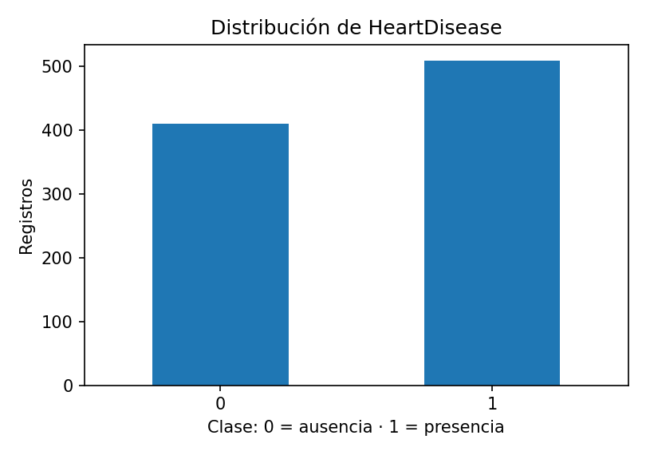
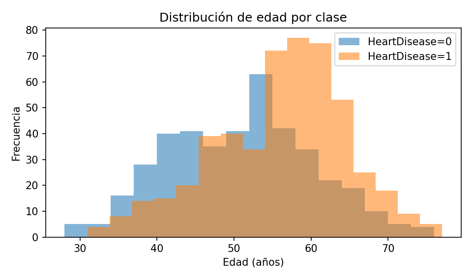
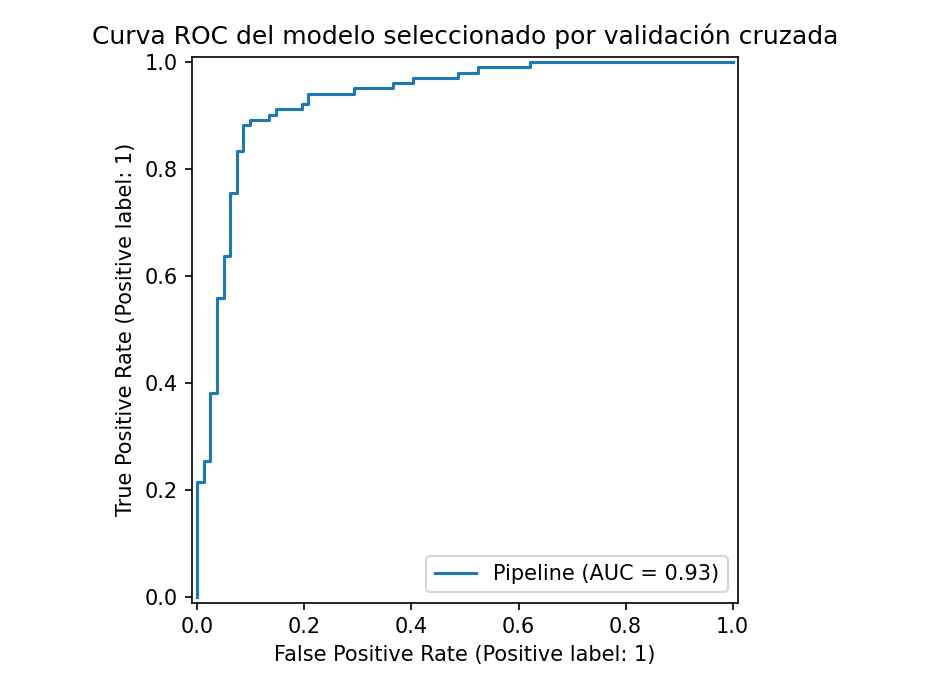
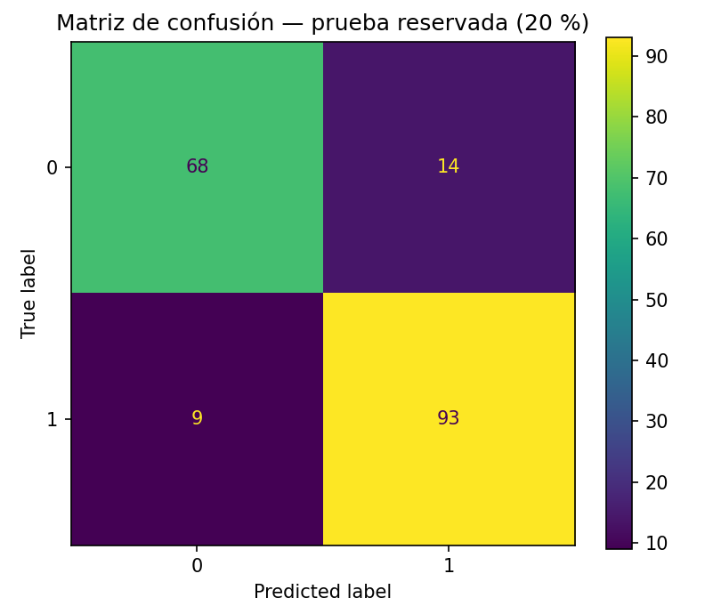

Del dato clínico a un sistema MLOps reproducible
El objetivo experimental es clasificar HeartDisease (1: presencia de enfermedad cardíaca; 0: ausencia) utilizando el dataset público Heart Failure Prediction. La muestra combina registros históricos; no contiene una etiqueta de incidencia futura de insuficiencia cardíaca.
Estructura modular y trazabilidad
El repositorio diferencia datos y preprocesamiento (src/), experimentos (notebooks/), entrenamiento (scripts/), API (app/), infraestructura (docker/ y k8s/), pruebas (tests/) y automatización (.github/workflows/).
Análisis exploratorio y auditoría de fuga de datos
Se revisan clases, edades, duplicados, ausencias y ceros físicamente implausibles: 1 registros con presión de reposo nula y 172 con colesterol nulo. Se convierten a NaN y se imputan dentro de los pliegues de entrenamiento.


Prueba didáctica de data leakage
Se comparan dos procedimientos sobre las mismas observaciones reales: uno incorrecto, que ajusta el preprocesamiento antes de dividir los datos, y otro correcto, que lo ajusta solo en entrenamiento. Una AUC mayor no está garantizada: lo importante es evitar consultar el conjunto de prueba durante el ajuste.
Entrenamiento seguro y selección por validación cruzada
División estratificada 80/20 con random_state=42. El preprocesamiento numérico y categórico se ajusta dentro de Pipeline; GridSearchCV utiliza cinco folds estratificados y optimiza ROC AUC. Se comparan SVC, Logistic Regression, Random Forest, KNN y Gradient Boosting. La selección se realiza por AUC media de CV, no por la prueba reservada.
| Clasificador | AUC CV | AUC prueba | Accuracy prueba | TP | FN |
|---|---|---|---|---|---|
| RandomForest | 0.931 | 0.933 | 0.875 | 93 | 9 |
| GradientBoosting | 0.926 | 0.926 | 0.891 | 95 | 7 |
| LogisticRegression | 0.922 | 0.933 | 0.886 | 93 | 9 |
| SVC | 0.920 | 0.938 | 0.880 | 93 | 9 |
| KNN | 0.902 | 0.936 | 0.864 | 88 | 14 |
Modelo seleccionado: RandomForest · AUC CV 0.931 · AUC prueba 0.933 · Accuracy en prueba 0.875.


La AUC resume capacidad discriminatoria y Accuracy depende del umbral de 0,5 y de las clases observadas; ninguna es por sí sola una medida de calibración clínica. src/modeling.py ↗ notebooks/2_model_pipeline_cv.ipynb ↗ scripts/train.py ↗
Despliegue: FastAPI + Docker
Se implementó un servicio REST con esquemas Pydantic: GET /health, GET /model-info, POST /predict. El archivo del modelo se produce con joblib durante el entrenamiento. Docker encapsula la aplicación y sus dependencias.
docker build -t heart-mlops:local -f docker/Dockerfile .
docker run --rm -p 8000:8000 heart-mlops:local
# Documentación de la API: http://localhost:8000/docsapp/api.py ↗ docker/Dockerfile ↗ docker/requirements.txt ↗ tests/test_api.py ↗
Orquestación con Kubernetes (Minikube)
Los manifiestos definen un Deployment con readiness probe y límites de recursos y un Service tipo ClusterIP. El modelo puede desplegarse localmente después de generar la imagen.
minikube start
minikube image load heart-mlops:local
kubectl apply -f k8s/deployment.yaml
kubectl apply -f k8s/service.yaml
kubectl port-forward service/heart-service 8000:80k8s/deployment.yaml ↗ k8s/service.yaml ↗
Integración y publicación continuas — GitHub Actions
El repositorio incluye validación automática de estilo mediante Ruff, pruebas con pytest y un workflow de construcción del sitio que entrena con datos reales, genera evidencias, revisa el servicio en Docker y publica el contenido en gh-pages. Consultar la ejecución y sus registros desde Actions.
.github/workflows/entrega-mlops.yml ↗ .github/workflows/entrega-mlops.yml ↗ tests/test_modeling.py ↗ · Ver ejecuciones y resultados de CI/CD ↗
Monitoreo de deriva mediante Evidently
Evidently compara las covariables reales de entrenamiento y prueba del dataset de Kaggle, sin modificar valores ni incorporar registros. La comparación es retrospectiva y no representa tráfico real de una API en producción.
Abrir el informe de Evidently ↗ · scripts/drift.py ↗ requirements-monitor.txt ↗
Conclusiones, límites y fuentes
El flujo constituye una demostración reproducible de prácticas MLOps, desde la auditoría de fuga hasta la automatización de una web académica. La partición única de datos históricos no equivale a validación externa; es necesario estudiar calibración, origen de los hospitales, deriva real y sesgos antes de cualquier uso clínico. La API, Docker, Kubernetes y Evidently son componentes de ingeniería verificables de manera separada.
Datos: fedesoriano — Heart Failure Prediction. Marco técnico: scikit-learn, FastAPI, Docker, Kubernetes, Evidently.